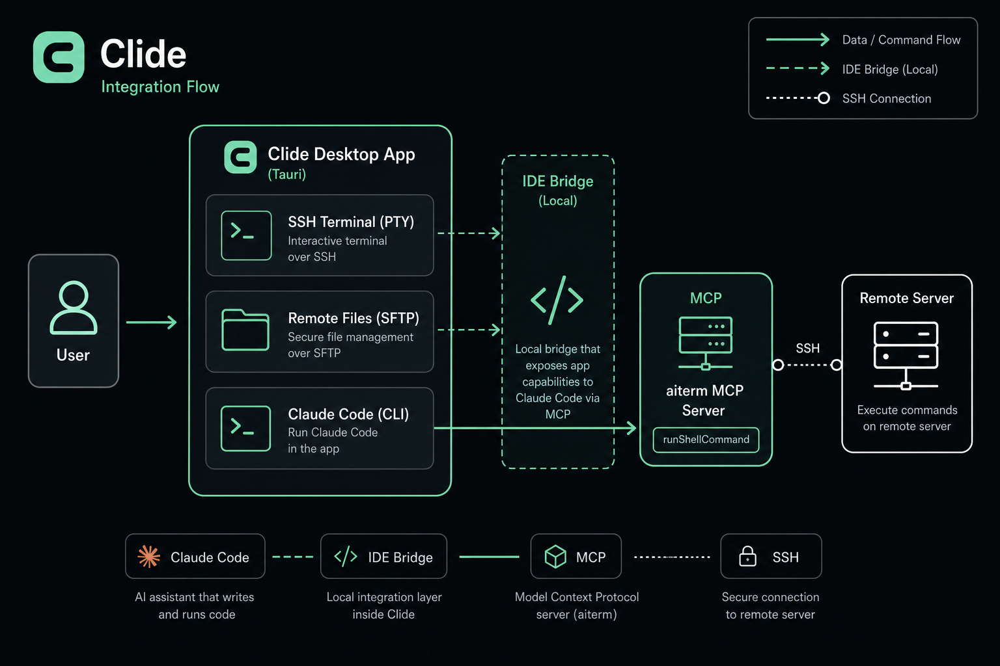

Multi-tab SSH terminal
Dockview split panes, session groups, persisted profiles. Real xterm.js PTY for local PowerShell and remote SSH. Same shell whether you type or AI runs a command.
Terminal, remote files, and AI assistant in one window
Multi-tab remote shell with real PTY output. AI reads the same stream you type in.
SFTP browse, upload, and edit configs in Monaco without leaving the app.
Local Claude Code drives commands into your open shell via MCP.
Built with
Multi-tab shells, remote files, live monitoring, and native Claude Code MCP. Not a chat window bolted onto PuTTY.
Dockview split panes, session groups, persisted profiles. Real xterm.js PTY for local PowerShell and remote SSH. Same shell whether you type or AI runs a command.
Browse, upload, edit nginx and systemd configs in Monaco without leaving the app.
CPU, memory, GPU, and disk on a separate exec channel. Never blocks your shell.
Root prompts appear in your terminal. You type the password. MCP never captures it.
Local Claude Code drives runShellCommand into your open PTY. SSH jump, SOCKS proxy, Telnet. Standard SSH on the server side, zero agent install.
Most AI + SSH setups distribute keys to every server or paste passwords into chat. Clide keeps the trust model of a traditional SSH client.

From daily SSH to 3 AM incidents. One window replaces terminal, SFTP, and chat.
AI runs df -h and journalctl in your live shell. You approve sudo and see every line.
SFTP browse production configs, patch in Monaco, save back. No scp round-trips.
Tabbed sessions, jump hosts through bastions. Monitor CPU and disk across boxes.
No AI keys on servers. No root passwords in Claude chat. Same boundary as Tabby or iTerm2.
Native Claude Code MCP integration no other SSH client ships out of the box.
| Capability | Clide | Tabby | Warp | iTerm2 | Cursor |
|---|---|---|---|---|---|
| Native SSH client | Yes | Yes | Yes | Yes | No |
| Multi-tab / split | Yes | Yes | Yes | Yes | No |
| SFTP file manager | Yes | No | No | No | No |
| Remote config editor | Monaco | No | No | No | Yes |
| Server monitoring | Yes | No | No | No | No |
| Claude Code MCP | Native | No | No | No | No |
| AI uses your PTY | Same shell | - | - | - | - |
| Open source | MIT | Yes | No | No | No |
| Cross-platform | Win/Mac/Linux | Yes | Mac | Mac | Yes |
Windows, macOS, or Linux installer from GitHub Releases.
Add hosts, users, keys. Jump hosts and SOCKS supported.
Password, 2FA, and sudo all happen in the left terminal.
Describe the issue. AI runs commands in your open shell.
aiterm. It bridges Claude Code to your terminal sessions. The desktop app brand is Clide.Free, MIT licensed. Windows, macOS, and Linux.